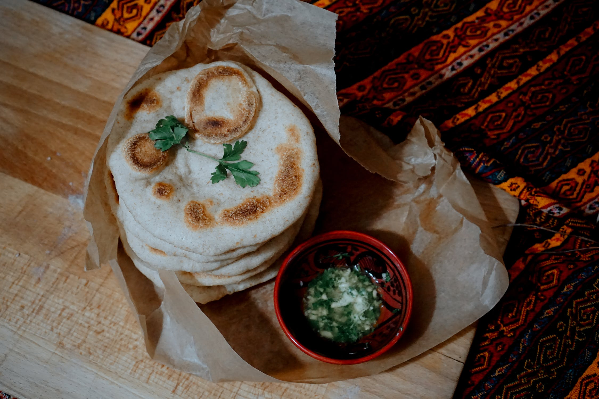
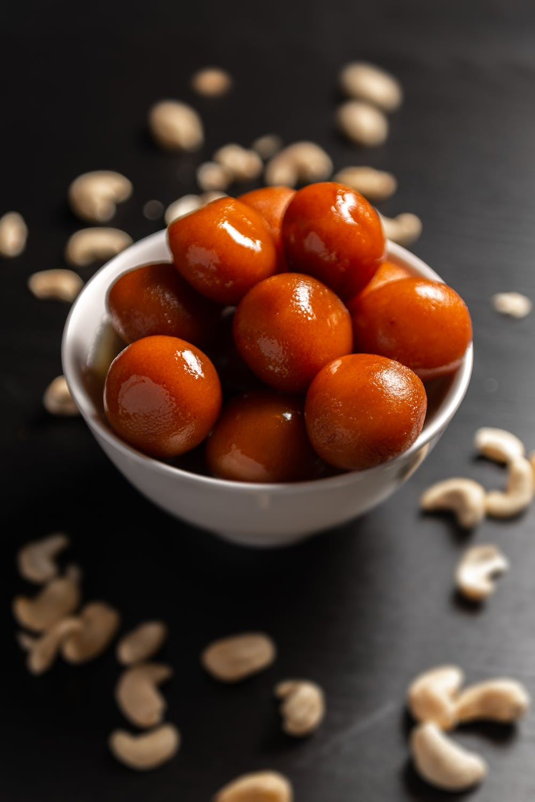
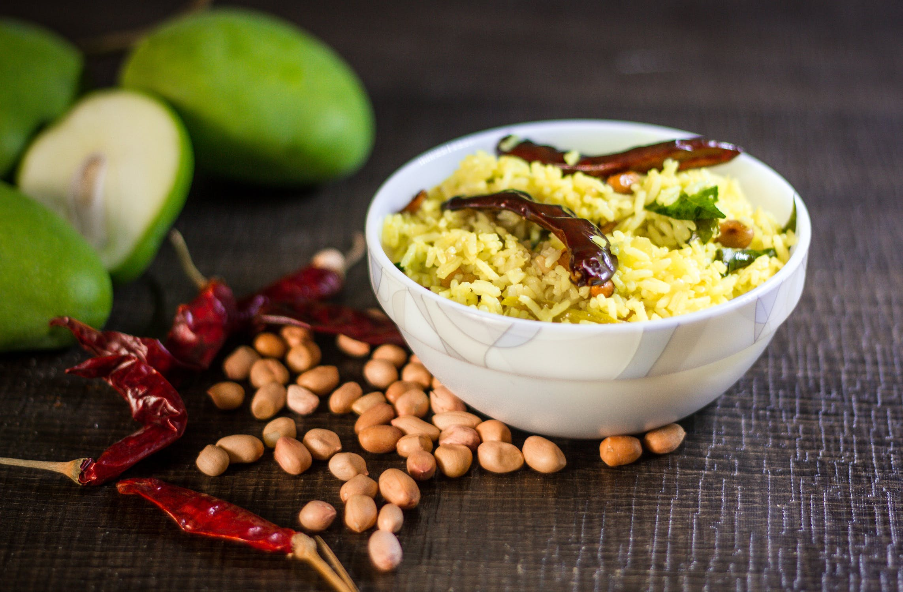
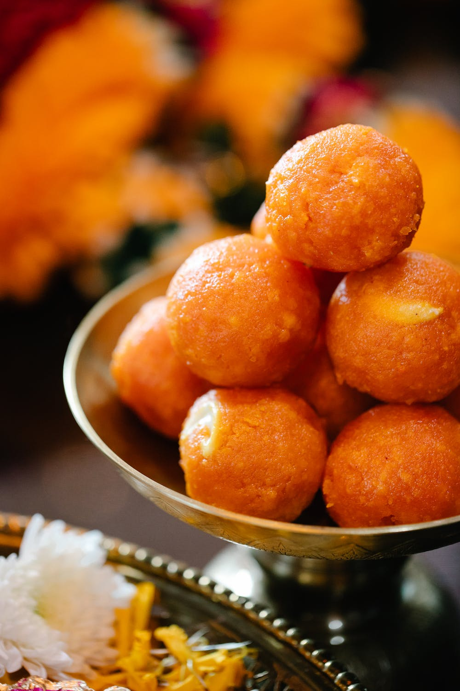

Find Meals for Your Ingerdients
Real food doesn`t have ingredinets,real food is ingredinets.
Your Search Results:
None - Veg Stater's

Fried Chicken
Fried chicken, also known as Southern fried chicken, is a dish consisting of chicken pieces that have been coated with seasoned flour or batter and pan-fried, deep fried, pressure fried, or air fried. The breading adds a crisp coating or crust to the exterior of the chicken while retaining juices in the meat. Broiler chickens are most commonly used.
Chicken kebabs
meat threaded onto skewers and grilled, generally over charcoal.Kabab or kebab is a piece of food, mostly meat grilled over charcoal fire. There are so many kabab varieties out there which are very popular in the restaurants and takeaways. Sham kababs, seekh kababs, galouti kabab, reshmi kababs, doner kebab are some of the most popular ones.
Chinese Specials


North Indian



South Indian


